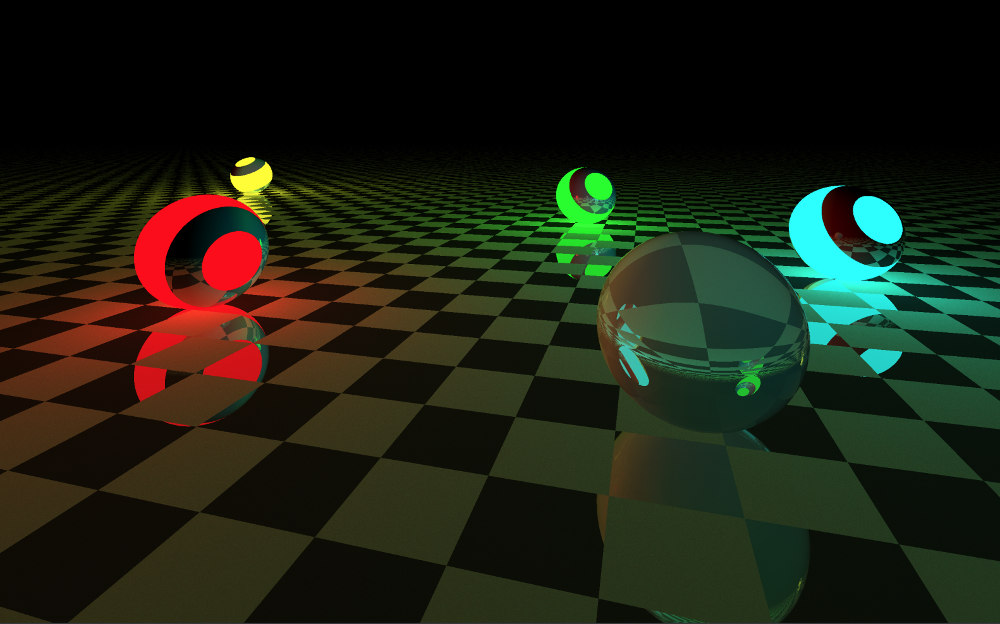
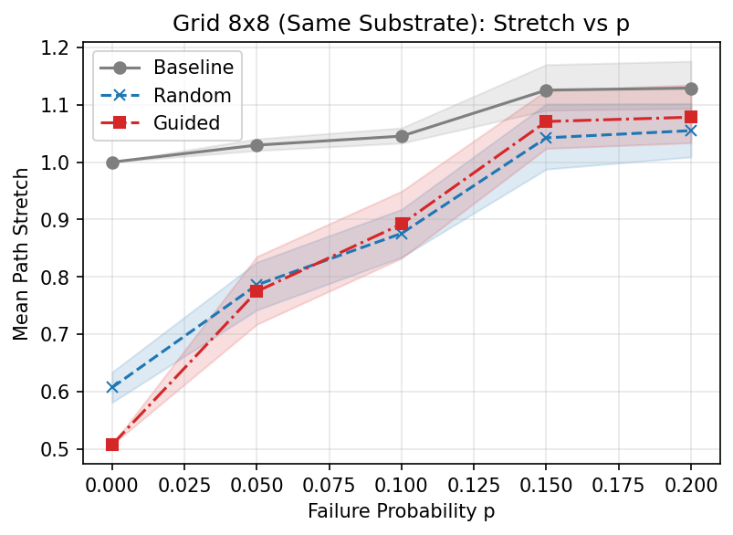

Projects

Realistic Ray Tracer Engine
Reflection, refraction, Phong lighting and global illumination, written in C++ with multithreading.
HalloHub
A hackathon-built mobile app that walks international students through visas, housing, and university paperwork.
Face Recognition System
Real-time face detection and recognition with a MySQL backend, reaching 90% accuracy on a controlled dataset.

Financial Data Streamer
A JP Morgan Chase Forage simulation project: a live-updating financial data dashboard that streams and renders trading data in real time.

Student-Teacher Dashboard
A role-based dashboard system for schools, with separate views for students and teachers, secure logins, an attendance tracker, and a notifications module.

Inventory Management System
A desktop inventory tool with search, live updates, and auto-generated reports.

Budgeted Multipath Overlays
My bachelor thesis: a graph simulation framework that decides where to place backup network links so a backbone stays resilient even when nodes fail, without blowing the budget.